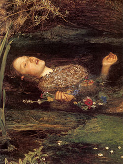

St. George and the Dragon
Bernat Martorell, 1434-1435
Lukisan Saint George and the Dragon oleh Bernat Martorell dibuat pada tahin 1434-1435, menggambarkan legenda Santo George, ksatria yang menunggang kuda putih dan mengalahkan naga jahat untuk menyelamatkan seorang putri dan kota. Dengan gaya Gotik Internasional, lukisan ini kaya detail, menonjolkan keberanian, kesucian, dan kemenangan kebaikan atas kejahatan. Karya ini awalnya menjadi bagian altar di istana Catalonia dan kini dipamerkan di Art Institute of Chicago. Lukisan ini bukan hanya cerita heroik, tapi simbol keyakinan dan perlindungan spiritual.

The acolade
Edmund Blair Leighton, 1901
Lukisan The Accolade oleh Edmund Blair Leighton, dibuat pada tahun 1901, menggambarkan momen upacara pengangkatan kesatria dalam tradisi Eropa abad pertengahan. Dalam karya ini, seorang raja atau ratu muda mengenakan jubah mewah dan mahkota sedang memberikan gelar kesatria dengan menyentuh bahu seorang ksatria yang berlutut menggunakan sisi datar pedang. Adegan ini disaksikan oleh orang-orang di latar belakang yang menjadi saksi upacara sakral tersebut. Lukisan bergaya realisme romantis ini menonjolkan nilai-nilai kesetiaan, kehormatan, dan pengabdian, serta kesan magis dan khidmat dari tradisi kesatria yang dihormati. Lukisan ini sering dianggap sebagai lambang idealisme dan etos kesatria yang abadi, memperlihatkan keindahan upacara pengukuhan dan semangat keberanian yang diapresiasi di budaya Eropa.

God speed
Blair Leighton, 1900
Lukisan God Speed oleh Edmund Blair Leighton, dibuat sekitar tahun 1900, menggambarkan seorang ksatria berbaju zirah yang bersiap meninggalkan kekasihnya untuk berperang. Dalam momen penuh haru ini, sang wanita mengikatkan pita merah di lengan ksatria sebagai simbol keberuntungan dan janji setia. Dengan gaya realisme romantis, lukisan ini menonjolkan nilai kesetiaan, pengorbanan, dan cinta yang kuat dalam tradisi kesatria abad pertengahan. God Speed adalah karya ikonik yang melambangkan keberanian dan harapan di tengah tantangan perang.

Tristan & isolde
Edmund Blair Leighton, 1902
Lukisan Tristan and Isolde karya Edmund Blair Leighton, dibuat tahun 1902, menggambarkan kisah romantis abad pertengahan tentang Tristan, seorang ksatria pemberani, dan Isolde, putri Irlandia. Dalam lukisan ini, pasangan kekasih tampak duduk bersama di taman marmar yang indah, menunjukkan kedekatan dan cinta mereka yang abadi. Cerita di balik lukisan ini berasal dari legenda tentang ramuan cinta yang membuat mereka tak terpisahkan, meskipun Isolde bertunangan dengan Raja Mark, paman Tristan. Karya ini menonjolkan tema kesetiaan, cinta terlarang, dan tragedi, serta memperlihatkan gaya detail dan romantisme khas Pre-Raphaelite yang kuat pada era awal abad ke-20.
La Belle Dame sans Merci
Sir Frank Dicksee, 1901-1902
Lukisan La Belle Dame sans Merci oleh Sir Frank Dicksee, dibuat sekitar tahun 1901-1902, menggambarkan adegan dari puisi berjudul sama karya John Keats. Lukisan ini menampilkan seorang ksatria muda berbaju zirah yang tampak terpikat oleh seorang wanita misterius bergaun merah, yang duduk di belakang seekor kuda hitam. Wanita tersebut adalah sosok la belle dame sans merci, atau "wanita cantik tanpa ampun," yang dalam puisi Keats dikenal sebagai femme fatale yang memikat dan kemudian meninggalkan ksatria dalam kesedihan dan kehampaan. Dicksee menonjolkan nuansa romantis sekaligus magis dengan warna yang hidup dan detail yang dramatis, tapi melukis adegan sebelum akhir tragis dari cerita itu. Karya ini menjadi simbol pesona dan bahaya cinta yang menggoda serta dilema kesetiaan dan nasib tragis yang sering muncul dalam kesusastraan romantik abad ke-19.

The souvenir
Jean-Honoré Fragonard, 1776-1778
Lukisan The Souvenir karya Jean-Honoré Fragonard, dibuat sekitar tahun 1776-1778, menggambarkan seorang gadis muda yang sedang mengukir inisial kekasihnya pada batang pohon, sementara anjing kecil peliharaannya mengawasinya dengan setia. Adegan ini penuh dengan nuansa romantis dan kepolosan, menonjolkan tema cinta, kesetiaan, dan harapan muda. Gaun merah muda sang gadis dan detail lipatan satin dilukis dengan sangat halus sesuai gaya Rococo yang cerah dan elegan. Ukuran lukisan ini kecil, sekitar 25 x 19 cm, dan kini disimpan dalam koleksi Wallace Collection di London. Karya ini mencerminkan sensitivitas emosional khas abad ke-18, mengekspresikan perasaan cinta dan harapan dalam balutan estetika yang ringan dan penuh keindahan.

Isabella & the pot of basil
William Holman Hunt, 1868
Lukisan Isabella and the Pot of Basil karya William Holman Hunt, selesai pada tahun 1868, menggambarkan momen memilukan dari puisi John Keats yang diadaptasi dari kisah Giovanni Boccaccio. Dalam karya ini, Isabella, seorang wanita muda berambut panjang yang mengenakan gaun tipis dan tanpa alas kaki, meratapi pot basil yang diletakkan di atas meja berhiaskan kain mewah. Pot tersebut secara simbolis menyimpan kepala kekasihnya, Lorenzo, yang dibunuh oleh saudara-saudaranya karena cinta mereka terlarang. Lukisan ini dipenuhi detail interior bergaya Victoria dan simbolisme kematian serta cinta abadi yang penuh kesedihan. Karya ini menonjolkan kesan sensual dan emosional, sekaligus menghadirkan perpaduan antara keindahan dan tragis dalam estetika Pre-Raphaelite. Lukisan sekarang berada di Laing Art Gallery, Newcastle.

Ophelia
Sir Everett Millais, 1851-1852
Lukisan Ophelia karya Sir John Everett Millais, dibuat antara tahun 1851-1852, adalah salah satu mahakarya dari aliran Prerafaelita yang terkenal. Lukisan ini menggambarkan momen tragis dari karakter Ophelia dalam drama Hamlet karya William Shakespeare, saat ia tenggelam di sungai dalam keadaan gila dan mulai menyanyi. Millais melukiskan Ophelia dengan detail alam yang luar biasa, menunjukkan wajahnya yang pucat dan ekspresi lemah, dengan rambut merah terurai dan gaun yang mengapung di air, dikelilingi bunga-bunga simbolis yang merefleksikan kepolosan, kesetiaan, dan kematian. Lukisan ini sangat mengesankan karena perpaduan antara realisme alam dan kekayaan emosi, menjadi ikon yang menggambarkan wanita yang rapuh namun kuat secara simbolis dalam kesedihan dan keindahan yang memilukan. Karya ini kini menjadi koleksi Tate Britain di London dan menjadi referensi penting dalam seni Victoria dan budaya populer.

The swing
Jean-Honoré Fragonard, 1767-1768
Lukisan The Swing oleh Jean-Honoré Fragonard, dibuat antara tahun 1767-1768, adalah salah satu karya ikonik Era Rokoko yang menampilkan suasana taman yang subur dan penuh warna. Gambar ini memperlihatkan seorang wanita muda berpakaian merah muda mewah sedang melayang tinggi di ayunan yang digerakkan oleh seorang pria tua yang hampir tersembunyi di balik bayang-bayang. Di bawah ayunan, seorang pria muda tersembunyi di semak-semak, memandang wanita itu dengan kekaguman dari posisi yang memungkinkan pandangannya mengintip ke bawah rok wanita tersebut. Wanita itu dengan ceria melempar sepatu kecilnya ke udara, menambah kesan genit dan nakal dalam adegan tersebut. Lukisan ini kaya akan simbolisme erotis dan menggambarkan suasana santai sekaligus penuh godaan yang populer di kalangan kelas atas Prancis abad ke-18. Karya ini kini menjadi koleksi Wallace Collection di London dan dianggap sebagai mahakarya yang mengekspresikan kemewahan serta kesenangan di era tersebut.

Sir galahad
Frederic Watts, 1860-1862
Lukisan Sir Galahad karya George Frederic Watts, dibuat antara tahun 1860-1862, menggambarkan ksatria terkenal dari legenda Arthurian yang dikenal karena kesucian dan keberanian. Lukisan ini menampilkan Galahad yang khusyuk dan penuh tekad, sering digambarkan sebagai figur yang idealis dan penuh kedamaian. Watts memandang Galahad sebagai simbol kesucian, keberanian, dan keutamaan moral, yang dilambangkan dengan ekspresi wajah yang tenang serta atribut-atribut seperti baju zirah dan kuda. Karya ini menunjukkan minat Watts terhadap tema keagamaan dan moralitas, dan ada beberapa versi lukisan ini. Lukisan ini berada di koleksi Harvard Art Museums dan terlihat menonjol karena kedalaman emosional serta simbolisme keutamaan.

The knight at the crossroad
Viktor Vasnetsov, 1878
Lukisan The Knight at the Crossroads karya Viktor Vasnetsov, dibuat pada tahun 1878, adalah karya penting dari aliran Romantisisme dan Simbolisme yang menggambarkan seorang ksatria berdiri di persimpangan jalan yang sunyi dan tandus. Ksatria tersebut mengenakan baju zirah tradisional Rusia dan duduk di atas kuda putih, tampak merenung di depan sebuah batu bertuliskan peringatan suram mengenai pilihan jalannya. Di sekitar ksatria terdapat simbol-simbol kematian dan tanda-tanda alam, termasuk tengkorak dan burung gagak hitam, yang menambah nuansa mistis dan dramatis. Lukisan ini mengandung makna filosofis tentang takdir, pilihan hidup, dan perjalanan pahlawan, serta merefleksikan budaya dan legenda rakyat Rusia. Karya ini kini tersimpan di Museum Rusia, Saint Petersburg, dan menjadi ikon seni nasionalis romantik Rusia pada akhir abad ke-19.

The vigil
John Pettie, 1884
Lukisan The Vigil karya John Pettie, dibuat tahun 1884, menggambarkan momen sakral menjelang upacara penobatan kesatria pada abad pertengahan. Dalam lukisan ini, seorang calon ksatria berlutut di depan altar gereja, mengenakan jubah putih yang melambangkan kemurnian dan memegang pegangan pedang yang dipasang ke lantai, menunjukkan kesiapannya menjalani ritual kesetiaan dan pengabdian. Latar gereja dengan cahaya lembut yang masuk menambah suasana khidmat dan penuh kekhidmatan. The Vigil merekam tradisi keagamaan dan budaya ketika para ksatria harus melalui malam pengawasan dan doa sebelum menerima gelar kehormatan. Karya ini tersimpan di Tate Britain, London, dan dihargai karena penggambaran emosi serta detail sejarah yang kuat, mewakili nilai loyalitas dan keutamaan dalam zaman medieval.